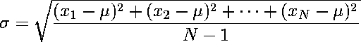

| For finite data sets x1, ..., xN,
the standard deviation
measures how widely the data spread around mean, μ. |
| Specifically, the standard deviation, σ, is |
|  |
| The variance is σ2. |
| |
| For continuous distributions, such as the normal, the variance is more easily
expressed through moments, which in turn are
expressed as integrals. |
| From the
formula
for the normal distribution, we see the mean mu and standard deviation sigma
characterize the distribution. |
| The standard deviation has a natural graphical interpretation: the second derivative of the normal density function
vanishes at μ + σ and at μ - σ. That is, the inflection points of the normal
density graph occur one standard deviation from the mean. |
| More commonly, we think of the standard deviation as relating the distance from the mean and the fraction of the
distribution contained within that distance. For example, Within one sigma of the mean lie 68% of the measurements;
96% lie within two sigma of the mean. |
|
| For normally dstributed data, the probability of a measurement lying more than 10 sigma
from the mean is 10-24. That we observe 10 sigma events every few months in
stock prices is a strong argument that stock price increments are not normally
distributed. |